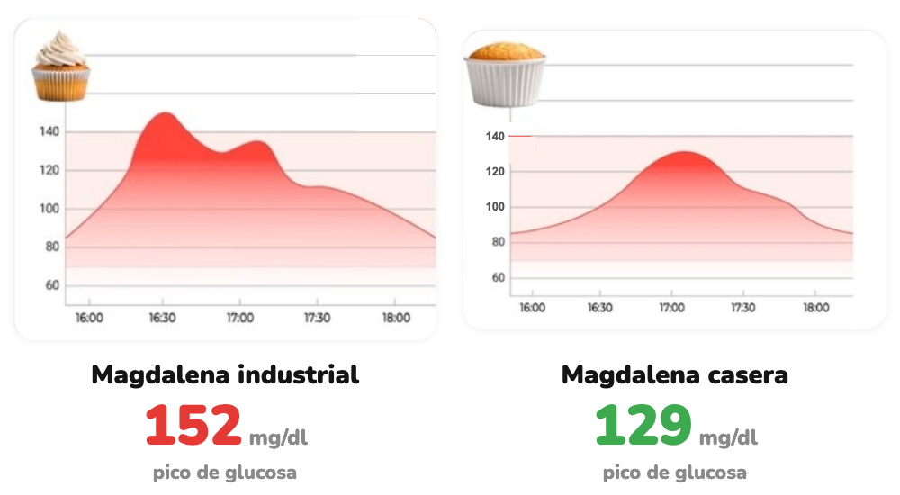

Cómo afecta
Misma magdalena. Distinta curva.
Industrial o casera: medimos la glucosa dos horas después.
Desliza →
Hacemos visible lo invisible
Industrial o casera: medimos la glucosa dos horas después.
Desliza →

Curvas reales de un Viber, en dos días distintos. La respuesta puede variar entre personas.
Busca versiones con fibra y proteína: tu curva lo nota.
Desliza →
glucovibes.com